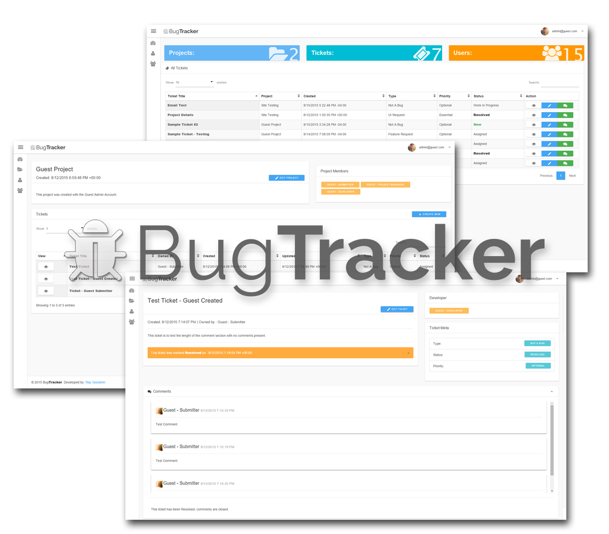

<div class="container">


    

    <h2 class="text-center">Written in C# &amp; Powered by ASP.NET, BugTracker is a custom built web application. By creating projects and tickets, users can easily track the issues of a piece of software.</h2>

    <p class="text-center"><a class="btn btn-dc btn-small btn-main-color" href="https://rgoodwin-bugtrack.azurewebsites.net">Visit Website</a></p>

</div><!-- /container -->
